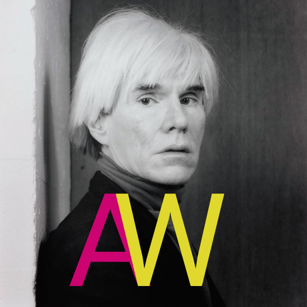
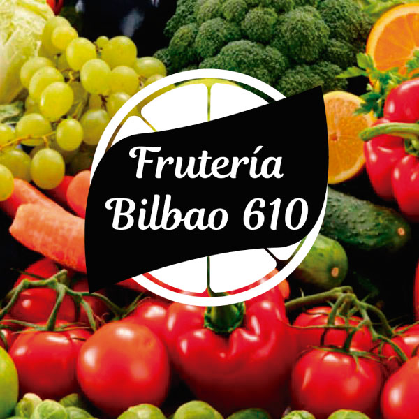
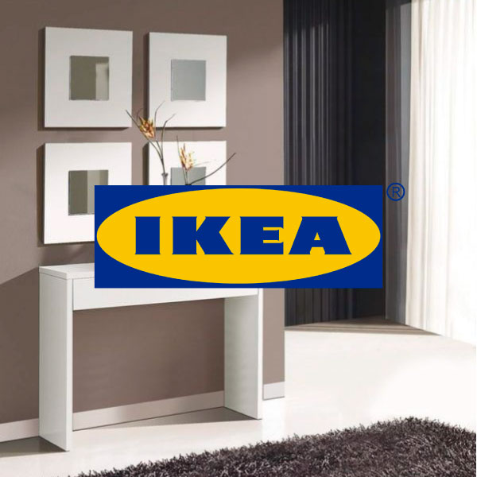
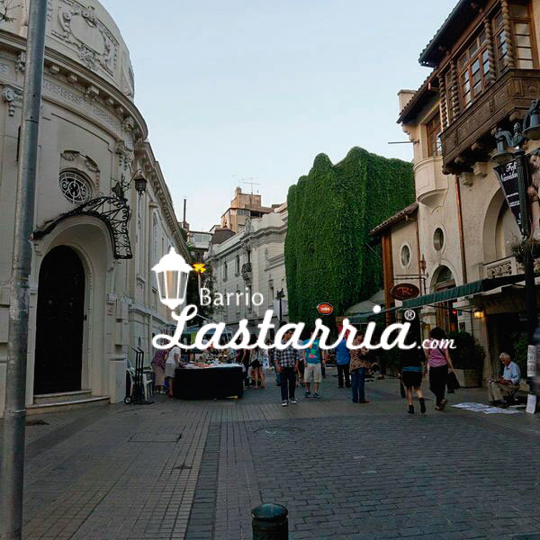

Ignacio Labra
Bienvenido a mi portafolio de trabajos y contacto
Proyectos




Sobre mi
Hola! mi nombre es Ignacio Labra Saavedra tengo 26 años, soy de Santiago de Chile actualmente me encuentro cursando la carrera de Desarrolo web React en Codrehouse y previamente una carrera de Produción Web en DuocUC.
Desde que decidì estudiar esta carrera sentì gran curiosidad de como se crean y diseñan las páginas web. Mi principal área de interés es el front-end. diseño y desarollo del sitio web.
Me gustaría aprender más y terminar de pulir las hábilidades que actualmente poseo y en un futuro poder ser un desarrollador freelance full-stack para asì poder pontenciar mis hábilidades y conocimientos.